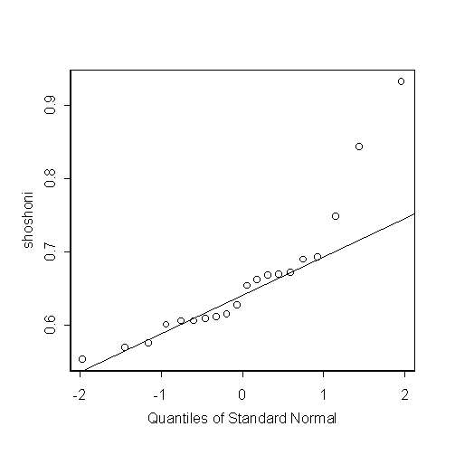

| / Home |
Keywords: t-test
The data are width-to-length ratios of beaded rectangles used by the Shoshoni Indians of America to decorate their leather goods. One might ask whether the golden rectangle (for which the width-to-length ratio is 0.618) can be considered an aesthetic standard for the Shoshonis just as it was for the Greeks and the Egyptians.
Data File (tab-delimited text)
| Dubois, Cora (ed.) (1960). Lowie's Selected Papers in Anthropology. University of California Press, Berkeley. |
| Larsen, R.J., and Marx, M.L., An Introduction to Mathematical Statistics and Its Applications 2nd Edition. Prentice-Hall, 1986. Case Study 1.2.2. |

One-sample t-Test data: shoshoni t = 2.0545, df = 19, p-value = 0.0539 alternative hypothesis: true mean is not equal to 0.618 95 percent confidence interval: 0.6172036 0.7037964 sample estimates: mean of x 0.6605 Wilcoxon signed-rank test data: shoshoni signed-rank normal statistic with correction Z = 1.6988, p-value = 0.0894 alternative hypothesis: true mu is not equal to 0.618
|
Home - About Us -
Contact Us Copyright © Gordon Smyth |